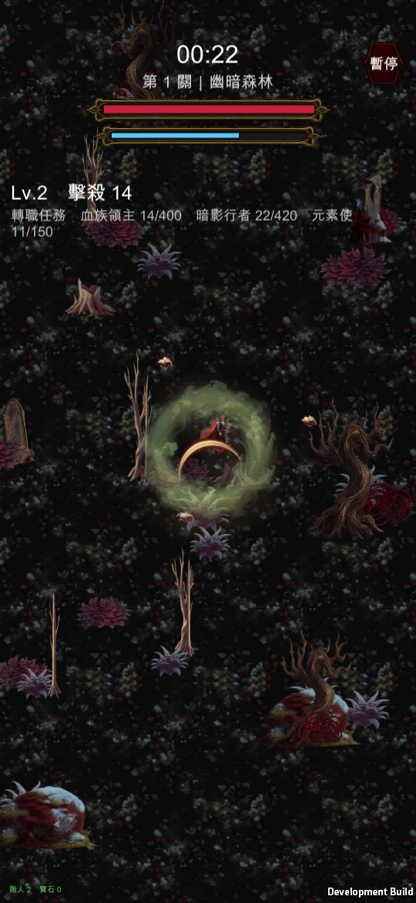
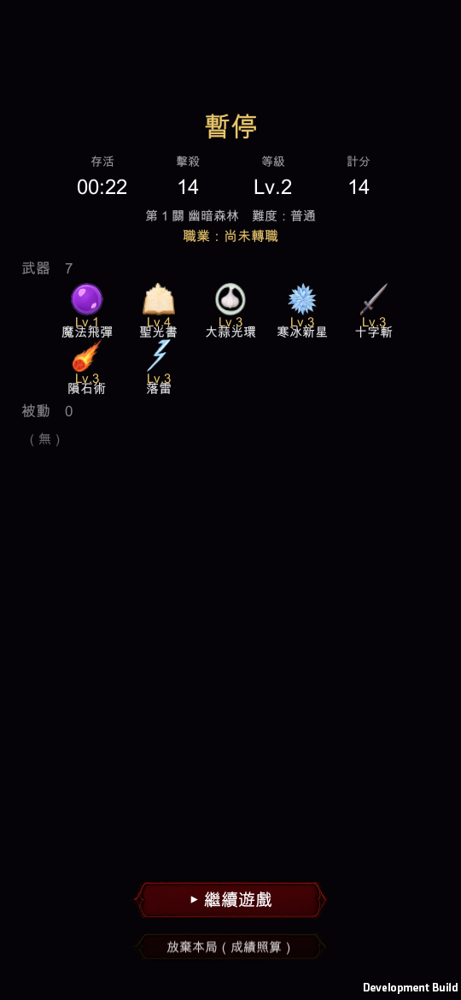

模擬 iPhone 靈動島拍的
已驗證

先講一件重要的事：你上次測的那個版本，其實根本沒有包含前一輪的 HUD 修正——Xcode 專案是更早的 commit 匯出的。所以「文字還是太小」有一部分是那個原因。這一輪除了再放大一階，也把真正沒修到的地方修掉，而且這次是有實際畫面可以看的。


上一輪我只讓右上角那顆暫停鈕吃到安全區位移，面板自己的內容沒有。面板標題是寫死「距離畫面頂端 90」，打開來就正好在靈動島底下。你回報的「按下暫停一樣靈動島切到字」就是這個，跟字級無關。
現在面板裡的標題、四格數值、關卡/職業那兩行、下面的武器與被動區塊，全部一起吃同一個位移。
| 項目 | 改前 | 改後 | iPhone 14 Pro 實際大小 |
|---|---|---|---|
| 時間 | 52 | 64 | 18.9pt → 23.3pt |
| 關卡名 | 32 | 42 | 11.6pt → 15.3pt |
| 等級／擊殺 | 38 | 50 | 13.8pt → 18.2pt |
| 機制提示 | 34 | 44 | 12.4pt → 16.0pt |
| 轉職任務 | 30 | 36 | 10.9pt → 13.1pt |
| 魔王名 | 30 | 40 | 10.9pt → 14.6pt |
| 暫停標題 | 52 | 64 | 18.9pt → 23.3pt |
| 暫停面板數值 | 40 | 48 | 14.6pt → 17.5pt |
| 武器／被動名稱 | 19 | 30 | 6.9pt → 10.9pt |
（左邊那兩欄是遊戲內部的單位，換算成 iPhone 上實際看到的大小才是右邊那欄。系統內文的標準大小是 17pt，可以拿來比對。）
這一輪一開始建置直接失敗（36 個 error）。原因跟畫面無關：驗證版才存在的那些除錯欄位被引擎當成「需要存檔的欄位」，編輯器跟遊戲兩邊對不起來就判定建置失敗。這些欄位都是跑的時候才塞值進去的，全部標成不需要存檔就解決了。
順帶一提，先前 Mac 端一直跑不起來（程式卡在系統的事件迴圈、一幀都不畫）現在也正常了——所以這次才有真的畫面可以給你看，不是只有「編譯過了」。
VR_ONLY=hud 這條驗證路徑，調完可以馬上拍給你看，不用再靠猜的。